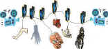

|
Bound/A-,A- |
||
|
Republic/1996/110m/WS 1.85 |
||
|
Directed by
the brothers Wachowski, Bound paints sexuality with stylish strokes in a noir frame. When
Corky, the lesbian handyperson, begins work on the apartment next door, Gina sees an opportunity to
break with her overbearing Mafia boy friend and make a financial score at the same time.
This beautiful DVD displays the deepest of blacks. Contrast is appropriately dramatic and vivid colors excite the senses. Sharp images are complimented by excellent surround sound. Andy and Larry Wachowski are joined in audio commentary by actor Joe Pantoliano and others for enthusiastic and funny film observations.
|

Apocalypse Now is Coppola's distorted vision of war now on DVD in gorgeous anamorphic images.

Tucker: The Man and His Dream is beautifully filmed with loving attention to detail.

Selections from the feature archive include articles on Akira Kurosawa,
Frank Darabont, Blonde Bimbos, Hollywood
Street Gangs, or Vietnam:
The Hollywood Pariah, and many more....
Body Parts 
Hollywood's long fascination with parts of the body is explored
piece by piece.